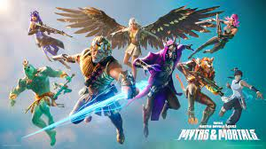
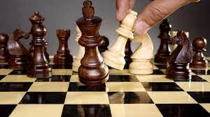
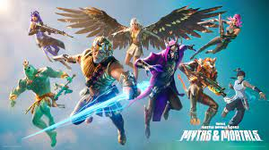

Jugar videojuegos
Me gusta jugar todo tipo de videojuegos de consolas y pc
- ForniteOtro juego que me gusta
- valorantesta es la imagen de mi juego favorito
Otros intereses
Mis prioridades
- Jugar videojuegos
- Jugar ajedrez
- Dormir
:format(jpg)/f.elconfidencial.com%2Foriginal%2Fd8d%2Fb67%2Fb66%2Fd8db67b66d090764465afa568c239335.jpg)
Me gusta jugar todo tipo de videojuegos de consolas y pc
- ForniteOtro juego que me gusta
- valorantesta es la imagen de mi juego favorito
